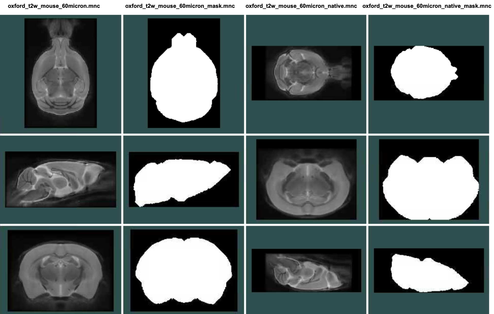

# on BMRC only - enter a shell inside our container
singularity shell --bind /well,/gpfs3 /well/lerch/shared/tools/mice.sif_latest.sif
mkdir oxford-in-vivo-150um
itk_convert INNA84g_10_T2_STRUCT_ISO_150x150x150_TEeff22ms/pdata/1/nifti/NIRIcKO_INNA8_4g_20230803_NIRIcKO_Females2_POPECS2_10_1_1.nii oxford-in-vivo-150um/oxford-in-vivo-150um_native.mncAny pydpiper pipeline, such as MBM.py, requires an initial model. The initial model is used in the 6 parameter registration step (often referred to simply as lsq6) to reorient the data from native space into common space via a rigid body transformation. In most cases the use of the initial model ends there, but if no MAGeT segmentation is used then the mask that is present in the initial model will continue to be employed.
For most pipeline runs an existing initial model can be used. A new initial model has to be created if you have a new type of acquisition where the contrast, resolution, or orientation in native space is different from any of the existing initial models. Here are the instructions for how to do that.
The two coordinate spaces of an initial model
Initial models have two coordinate spaces: a standard space and a native space. Native space is as the image comes off the scanner. There are different positions that a rodent can be loaded into the scanner (supine or not), and ex-vivo samples can be in different orientations still. Standard space is the standard orientation in which our atlases are in.
The internals of an initial model
Here are the files in an initial model directory, using the oxford-model-2023 as an example:
| Filename | Description |
|---|---|
| oxford_t2w_mouse_60micron.mnc | The image in common space. |
| oxford_t2w_mouse_60micron_mask.mnc | A (brain) mask of the image in common space. Voxels inside the mask have a value of 1, outside the mask a value of 0. |
| oxford_t2w_mouse_60micron_native.mnc | The image in native space. |
| oxford_t2w_mouse_60micron_native_mask.mnc | A (brain) mask of the image in native space. |
| oxford_t2w_mouse_60micron_native_to_standard.xfm | The transform that moves from native space to standard/common space. |
Here’s a look at the four image files

Steps to create a new initial model
To create a new initial model you require an image, a mask for that image, and a transform that moves between native and standard space. Since creating a new mask from scratch is tedious, my usual process for creating a new initial model is to:
Find a good native image to use for my native space.
Create the transform that goes from native to standard space.
Resample the native image to standard space using that newly created transform
Resample the mask from an existing initial model into both standard and native space.
Optionally replace the native and standard space image with a groupwise average image after running a pydpiper pipeline.
A worked example
I am going to create a new init model for some volumetric data acquired by Antoine Cherix. Due to time constraints he acquired a quick structural MRI at 150μm isotropic resolution. For an effective pipeline we thus need to create a new initial model for this dataset.
Step 1: Create directory and copy native file
First I will take a fairly randomly selected native file, and copy it to a fresh directory while renaming it to follow the standard naming structure and converting it to MINC. (And I’m running this on the BMRC cluster, where the MINC tools are living inside a container, so I shell into the container first).
Step 2: Create the native to standard transform
There are two easy ways to create the native to standard transform. The first is to do a manual registration in register, and the second to create the transform using param2xfm. I will do the latter. First, let’s look at the native file compared to the existing native files
The three images on the left are three different native files, showing just how crazy Bruker’s coordinate space is. And it also shows that 150μm kinda sucks, but should be good enough for our pipelines.
Most importantly, it gives us a hint at the rotation - in this case 90 degrees around the X axis. So now we have to create a transform that encompasses that rotation. But in addition to the rotation, we also have to set the centre of the rotation (i.e. around which point the rotation is applied), and any possible translations. These latter two are obtained by estimating the centre of gravity of the two images. First, the centre of gravity of our new 150μm image:
volume_cog oxford-in-vivo-150um_native.mnc This outputs -0.213479 -5.255886 0.921224.
Then the same for our standard orientation reference
volume_cog ../oxford_memri_60um_init_model/oxford_memri_60um.mnc This outputs -0.123746 0.995725 0.272954.
Lastly we’ll need to compute the difference between those two centres of gravity, which comes out to 0.089733 6.251611 -0.648270.
Now we can create our transform
param2xfm -center -0.213479 -5.255886 0.921224 -translation 0.089733 6.251611 -0.648270 -rotation -90 0 0 test1.xfmNow, to look at the file, we need to resample it. But first we make our life easier by creating a resampling target - an image that looks exactly like our standard space reference but is sampled at 150μm since that is the resolution we’ll be working in.
# the resampling target
autocrop -isostep 0.15 ../oxford_memri_60um_init_model/oxford_memri_60um.mnc rsltarget.mnc
# and the resample command itself
mincresample -clobber -like rsltarget.mnc -transform test1.xfm oxford-in-vivo-150um_native.mnc test1.mncLet’s take a look
It looks like we’re mostly right, but that 90 degrees is a bit under-rotated. Let’s hazard a guess at 100 degrees instead
param2xfm -clobber -center -0.213479 -5.255886 0.921224 -translation 0.089733 6.251611 -0.648270 -rotation -100 0 0 test1.xfm
mincresample -clobber -like rsltarget.mnc -transform test1.xfm oxford-in-vivo-150um_native.mnc test1.mncAnd another look
That looks better - good enough to move on.
Now a quick aside - sometimes the necessary rotations are elusive as the mind bends trying to get that right from looking at 2D slices. Or because coffee hasn’t kicked in yet. To automatically determine the right transform you could use rotational_minctracc.py like so:
rotational_minctracc.py oxford-in-vivo-150um_native.mnc ../oxford-model-2023/oxford_t2w_mouse_60micron.mnc test2.xfm test2.mnc -r 180 -i 90This outputs a transform (test2.xfm) and a resampled file (test2.mnc). It tells it to search for 180 degrees (-r 180) in each dimension with 90 degree intervals (-i 90). What it does under the hood is to create a series of transforms with param2xfm and then tries to improve them with a quick call to minctracc.
In this case the output looks the same as as the 90 degree rotation, so slightly under-rotated. The final bit spit out on the command line looks like this:
{'xcorr': 0.8489107815, 'transform': '//tmp/slurm-53038763/rot_305398/rot_2.xfm', 'resampled': '//tmp/slurm-53038763/rot_305398/rot_6.mnc', 'xrot': -90, 'yrot': 0, 'zrot': 0, 'coor_src': array([-0.1961 , -5.278746, 0.905191], dtype=float32), 'coor_trgt': array([0.03, 0.51, 0.6 ], dtype=float32)}
Which gives the hint that it’s a -90 on X that is needed, which you can then play with if the final transform doesn’t look right. You could alternately decrease the rotation range to, say, 10 degrees (-i 10), which would like give a very good transform, but it would take a long time to run.
Step 3: resampling files
OK, we now have our native image and a transform to take it to standard space. Time to create all the necessary files.
First, we rename our test transform and the test resample to have the appropriate names
mv test1.mnc oxford-in-vivo-150um.mnc
mv test1.xfm oxford-in-vivo-150um_native_to_standard.xfmThen we port over the masks
# first in standard space
mincresample ../oxford-model-2023/oxford_t2w_mouse_60micron_mask.mnc -like oxford-in-vivo-150um.mnc oxford-in-vivo-150um_mask.mnc -keep_real_range -nearest_neighbour
# next in native space
mincresample ../oxford-model-2023/oxford_t2w_mouse_60micron_mask.mnc -like oxford-in-vivo-150um_native.mnc -transform oxford-in-vivo-150um_native_to_standard.xfm -invert oxford-in-vivo-150um_native_mask.mnc -keep_real_range -nearest_neighbourAnd here’s what it all looks like
There are potentially some unnecessary files to be deleted (like the resampling target or different transform tests), but otherwise the init model is now finished and ready to be used in a pipeline.